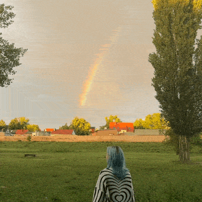

As far as I can recall, I developed this fear of autumn during my final year of school. In my country, after completing all 11 grades, you can usually go straight to university. I had a detailed plan for exactly what my future would look like right after graduation. But for reasons I don't want to mention here, I had to cancel that plan.
When our final school year started that autumn, I was incredibly sad and unmotivated. I truly believed nothing could ever be as good as the future I had planned. Because of that, I spent the whole semester barely planning anything at all.
Every autumn after that became a little sadder and deeply nostalgic. To make things worse, around that time of year, some people I knew would get sick and eventually pass away. That made the days feel heavy, long, and deeply sorrowful.
For a couple of years, I just went with the flow. Of course, I still had some backup plans, but it was harder to focus on them fully because I was doing completely different things at university. It was then that I realised I had put too much weight on my shoulders. I couldn't handle any of the paths ahead of me, they just hung open in my mind like multiple unfinished window tabs.
I wasn't enjoying my life. I always had a mountain of tasks from completely different areas, and I never had time to just exist and actually enjoy being free. I always felt like I didn't deserve to just chill out because a massive pile of unfinished tasks was constantly waiting for me.
Living like this forced me onto autopilot by default: there was always something to finish, always a tight deadline. My life turned my routines, my hobbies, meetings with friends, and time spent with family into a grey mass that drifted right through me without me even noticing. It brought an overwhelming amount of stress. Even my free time felt like hell because I felt so intensely guilty for doing nothing.
And most of everything I mentioned above happened during autumn. I always thought that if I could just get through this season, I would be able to enjoy my life again. But it never happened. It would never happen as long as I kept pretending that the specialty I am currently in is the one I actually want to be in. Nevertheless, I kept lying to myself that the things I was doing would bring me joy and satisfaction, alongside stability and safety.
But after a while, everything instantly turned to zero when February 24, 2022, arrived.
Even though that life wasn't one I was proud of, it was still devastating to realise I had basically lost everything I had been working for. I was left with nothing. And I was left with one massive question: what now?
I felt like a complete failure. My home was no longer safe, and suddenly I was in a new country, completely cut off by a language I didn't know. All I had left was my backpack with my documents, a few clothes, dry food, and matches, along with a bag holding my laptop and graphic tablet.
I didn't want to pick myself up and start all over again. I felt like I had no right to say I was tired or sad while others in my country were living under air raid sirens, missiles, and occupation. So, I kept it all to myself. With time, I found a language course, and that became my main focus for a year. I paused my university studies because it was impossible to handle both. For a while, things actually started to look up, and I even thought I had found new friends. But then, the same question returned: what now? Yes, I was studying the language, but what came next? Go back to my old university? I couldn't bring myself to do that. I was so tired of pretending to be someone I wasn't, forced into a career I couldn't see myself doing. I had a dream. I decided to at least try to imagine turning my life in a completely different direction, the one I actually wanted. And *spoiler alert* I did it. I stayed in this country, and now I am studying a brand-new specialty. And I am genuinely happy about it. I finally feel like I am doing what I want to do, and I can clearly see a future in it. But going back to the original question: why do I feel so terrible when autumn arrives? At first, I wanted to say that I am afraid of my future, but I don't think that's true anymore. I am afraid of the past. I am terrified of that time when I wasn't doing what I wanted, when I wasn't enjoying my life at all. I am terrified that it will happen all over again. Somehow, all of those old feelings, the suffering, the tears, the struggles, and the profound losses have merged into one heavy weight that settles over me. A feeling I get every single autumn. And I am so afraid that it will never truly go away.
Regarding the pain part—yes. I am so grateful to be attending online psychotherapy sessions with my psychiatrist. I truly believe that if it weren't for her, I would have completely lost my mind about two years ago. I had dozens of questions, but we took it one step at a time, working on the most urgent problems first.
I’ve learned an immense amount about myself, and I am still learning every day. She provided fully explained answers to every single worry of mine. And now, writing this paragraph, I want to say that, yes, I feel literal physical pain when that autumn anxiety strikes. It feels exactly like heartbreak or deep grief. For all of these experiences, the exact same part of the brain lights up, sending signals to the body that something is terribly wrong - and the body reacts with real pain. I am so glad I understand this now because it means I can handle it better.
For instance, people with ADHD or BPD have a higher sensitivity to feelings and emotions, causing them to experience everything much more intensely. Both conditions are heavily linked to Rejection Sensitive Dysphoria (RSD), an overwhelming emotional pain triggered by any perceived failure or criticism that often leads to intense self-criticism.
Knowing this, I no longer feel guilty when it happens to me, even though from time to time it still hurts like hell. I just know that it will pass. I am slowly getting better at managing it, and I am getting better in general. I am trying not to be so hard on myself, and to stop placing impossibly high expectations on my shoulders. I am trying to be patient with myself - though, gosh, it is so incredibly hard for me - but here I am, aiming to handle it a little better every day.

The end.